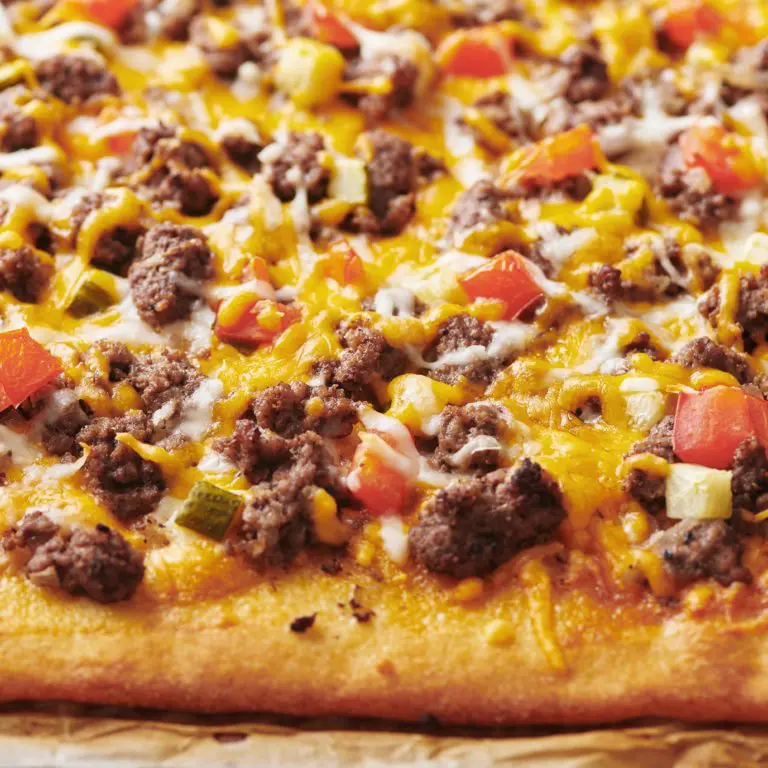

Description:
$her, this recipe will walk you through it.
Ingredients:
- nonstick cooking spray
- 1 (13.8 ounce) can refrigerated pizza dough (such as Pillsbury®)
- 1 pound ground beef
- 1 onion, chopped
- 1 cup mayonnaise
- ⅛ cup prepared yellow mustard
- 1 ½ cups shredded Cheddar cheese
- ¾ cup chopped dill pickles
Steps:
- Preheat the oven to 400 degrees F (200 degrees C). Grease a baking sheet with nonstick cooking spray; unroll pizza dough over the baking sheet.
- Bake in the preheated oven until golden, about 8 minutes.
- Meanwhile, cook and stir beef and onion in a skillet over medium heat until beef is browned and crumbly, 5 to 7 minutes. Drain.
- Mix mayonnaise and mustard together in a small bowl. Spread over the parbaked crust. Layer beef-onion mixture, Cheddar cheese, and pickles on top.
- Return to the oven and bake until crust is dark golden brown, 6 to 10 minutes.